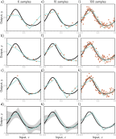

Measuring and Improving Performance
Image credits: Deep Learning by Michael Nielsen
With sufficient capacity (i.e., number of hidden units), a neural network will often perform perfectly on the training data. However, this does not guarantee good performance on unseen (new test) data.
Test errors have three distinct causes:
- the inherent uncertainty in the data,
- the amount of training data,
- the choice of model.
The latter dependency raises the issue of hyperparameter selection.
Training a simple model
{kind=link}
- \(D_i = 40\) inputs, \(D_o = 10\) outputs, passed through \(\operatorname{softmax}\) activation function.
- Two hidden layers with \(D = 100\) hidden units each.
- Trained using SGD with batch size \(100\) and learning rate \(\eta = 0.1\) for \(6000\) steps (\(150\) epochs).
- Loss: multiway cross-entropy.

Sources of error
Regression function. Solid black line shows ground truth function. To generate \(I\) training examples \(\{x_i, y_i\}\), the input space \(x \in [0, 1]\) is divided into \(I\) equal segments and one sample \(x_i\) is drawn from a uniform distribution within each segment. The corresponding value \(y_i\) is created by evaluating the function at \(x_i\) and adding Gaussian noise (gray region shows \(\pm 2\sigma\)). The test data are generated in the same way.
{kind=link}
We fit a simplified shallow neural network to this data.
- The weights and biases are chosen so that the “joints” of the function are evenly spaced across the interval.
- If there are \(D\) hidden units, then these joints will be at \(0, \nicefrac{1}{D}, \nicefrac{2}{D}, \ldots \nicefrac{(D-1)}{D}\).
![a) The weights and biases between the input and hidden layer are fixed (dashed arrows). b-d) They are chosen so that the hidden unit activations have slope one, and their joints are equally spaced across the interval, with joints at x = 0, x = \nicefrac{1}{3}, x = \nicefrac{2}{3}, resp. Modifying the remaining parameters \bm{\phi} = \{\beta, \omega_1, \omega_2, \omega_3\} can create any piecewise linear function over x \in [0, 1] with joints at \nicefrac{1}{3} and \nicefrac{2}{3}. e-g) Three example functions with different values of the parameters \bm{\phi}.](assets/images/PerfModel.svg)
Noise, bias, and variance
The data generation process includes noise, so there are multiple possible valid outputs \(y\) for each input \(x\). This source of error is insurmountable for the test data. However, it does not necessarily limit the training performance; we will likely never see the same input \(x\) twice during training, so it is still possible to fit the training data perfectly.
Noise may arise because there is a genuine element to the data generation process, because some of the data are mislabeled, or because there are further explanatory variables that were not observed.
![a) Noise. Data generation is noisy, so even if the model exactly replicates the true underlying function (black line), the noise in the test data (gray points) means that some error will remain (gray region represents 2\sigma). b) Bias. Even with the best possible parameters, the three-region model (cyan line) cannot exactly fit the true function (black line) (gray regions represent signed error). c) Variance. In practice, we have limited noisy training data (orange points). When we fit the model, we don’t recover the best possible function from panel (b) but a slightly different function (cyan line) that reflects idiosyncrasies of the trainin data (gray region represents 2\sigma).](assets/images/PerfNoiseBiasVariance.svg)
The model is not flexible enough to fit the true function perfectly. For example, the three-region neural network model cannot exactly describe the quasi-sinusoidal function, even when the parameters are chosen optimally.
We have limited training examples, and there is no way to distinguish systematic changes in the underlying function from noise in the underlying data. When we fit a model, we do not get the closest possible approximation to the true underlying function. Indeed, for different training datasets, the results will be slightly different each time. In practice, there may also be additional variance due to the stochastic learning algorithm, which does not necessarily converge to the same solution each time.
Mathematical formulation of test error
Consider a 1D regression problem where the data generation process has additive noise with variance \(\sigma^2\). For each \(x\), there is a distribution \(p(y \mid x)\) with expected value (mean) \(\mu(x)\): \[ \mu(x) = \E_y[y(x)] = \int y(x) p(y \mid x) dy \] and fixed noise \(\sigma^2 = \E_y\left[ (\mu(x) - y(x))^2 \right]\).
Now, consider a least squares loss between the model prediction \(f(x; \bm{\phi})\) at position \(\bm{x}\) and the observed value \(y(x)\) at that position \[ \begin{aligned} \mathcal{L}(x, y; \bm{\phi}) &= \left( f(x; \bm{\phi}) - y(x) \right)^2 \\ &= \left( f(x; \bm{\phi}) - \mu(x) + \mu(x) - y(x) \right)^2 \\ &= \left( f(x; \bm{\phi}) - \mu(x) \right)^2 + 2 \left( f(x; \bm{\phi}) - \mu(x) \right) \left( \mu(x) - y(x) \right) + \left( \mu(x) - y(x) \right)^2 \end{aligned} \]
The underlying function is stochastic, so this loss depends on the particular \(y(x)\) we observe. The expected loss is: \[ \begin{aligned} \E_y[\mc{L}(x)] &= \E_y\left[\left( f(x; \bm{\phi}) - \mu(x) \right)^2 + \left( \mu(x) - y(x) \right)^2 + 2 \left( f(x; \bm{\phi}) - \mu(x) \right) \left( \mu(x) - y(x) \right)\right] \\ &= \left( f(x; \bm{\phi}) - \mu(x) \right)^2 + \sigma^2 + 2 \left( f(x; \bm{\phi}) - \mu(x) \right) \E_y[\mu(x) - y(x)] \\ &= \left( f(x; \bm{\phi}) - \mu(x) \right)^2 + \sigma^2 + 2 \left( f(x; \bm{\phi}) - \mu(x) \right) \left( \mu(x) - \E_y[y(x)] \right) \\ &= \left( f(x; \bm{\phi}) - \mu(x) \right)^2 + \sigma^2 \end{aligned} \tag{1}\]
We can see that the expected loss has been broken down into two terms: the first term is the squared deviation between the model and the true function mean, and the second term is the noise.
The first term can be further partitioned into bias and variance. The parameters \(\bm{\phi}\) of the model \(f(x; \bm{\phi})\) depend on the training dataset \(\mc{D} = \{x_i, y_i\}\). The training dataset is a random sample from the data generation process. The expected model output \(f_\mu(x)\) with respect to all possible datasets is hence: \[f_\mu(x) = \E_\mc{D}[f(x; \bm{\phi})(\mc{D})].\]
Returning to the first term of Equation 1, we add and subtract \(f_\mu(x)\) and expand \[ \begin{aligned} \left( f(x; \bm{\phi}) - \mu(x) \right)^2 &= \left( f(x; \bm{\phi}) - f_\mu(x) + f_\mu(x) - \mu(x) \right)^2 \\ &= \left( f(x; \bm{\phi}) - f_\mu(x) \right)^2 + 2 \left( f(x; \bm{\phi}) - f_\mu(x) \right) \left( f_\mu(x) - \mu(x) \right) + \left( f_\mu(x) - \mu(x) \right)^2 \end{aligned} \]
Taking the expectation with respect to the training dataset \(\mc{D}\) yields \[ \E_\mc{D}\left[\left( f(x; \bm{\phi}) - \mu(x) \right)^2\right] = \E_\mc{D}\left[\left( f(x; \bm{\phi}) - f_\mu(x) \right)^2\right] + \left( f_\mu(x) - \mu(x) \right)^2. \]
Finally, substitute this result into Equation 1: \[ \E_y[\mc{L}(x)] = \sigma^2 + \text{Bias}^2 + \text{Variance}, \] where \(\text{Bias}^2 = \left( f_\mu(x) - \mu(x) \right)^2\) and \(\text{Variance} = \E_\mc{D}\left[\left( f(x; \bm{\phi}) - f_\mu(x) \right)^2\right]\).
This equation says that the expected loss after considering the uncertainty in the training data \(\mc{D}\) and the test data \(y\) consists of three additive components. The variance is the uncertainty in the fitted model due to the particular training dataset we sample. The bias is the systematic deviation of the model from the mean of the function we are modeling. The noise is the inherent uncertainty in the true mapping from input to output.
Reducing error
The noise component is insurmountable; there is nothing to do to circumvent this, and it represents a fundamental limit on expected model performance. However, it is possible to reduce the other two terms.
Reducing variance
Fitting the model to two different training sets results in slightly different parameters. It follows that we can reduce the variance by increasing the quantity of training data. This averages out the inherent noise and ensures that the input space is well sampled.

Reducing bias
The bias term results from the inability of the model to describe the true underlying function. This suggests that we can reduce this error by making the model more flexible. This is usually done by increasing the model capacity. For neural nets, this means adding more hidden units and/or hidden layers.
{kind=link}
Bias-variance trade-off
For a fixed-size training dataset, the variance term typically increases as the model capacity increases. Consequently, increasing the model capacity does not necessarily reduce the test error!
![Overfitting. a-c) A model with three regions is fit to three different datasets of fifteen points each. The result is similar in all three cases (i.e., the variance is low). d-f) A model with ten regions is fit to the same atasets. The additional flexibility does not necessarily produce better predictions. While these three models each describe the training data better, they are not necessarily closer to the true underlying function (black curve). Instead, they overfit the data and describe the noise, and the variance (difference between fitted curves) is larger.](assets/images/PerfCapacityVariance.svg)
We have seen that as we add capacity to the model, the bias decreases, but the variance increases for a fixed-size training dataset. This suggests that there is an optimal capacity where the bias is not too large and the variance is still relatively small.

- Pixel values: \(x \in \R^{784}\).
- Outputs: \(a^{(3)} = f\left(x; {W}, {b}\right) \in \R^{10}\).
- \({W}^{(2)} \in \R^{30 \times 784}\) \({b}^{(2)} \in \R^{30}\)
- \({W}^{(3)} \in \R^{10 \times 30}\) \({b}^{(3)} \in \R^{10}\)
- Total number of parameters: \(30 \times 784 + 30 + 10 \times 30 + 10 = 23,860\).
Are we using too many parameters?
* Are the parameters being adjusted to learn the noisy training data?
* The parameters should be adjusted for classification of new (unseen) data.
{kind=link}
Overfitting
- Suppose we train the network using on \(1000\) training images, instead of \(50,000\).
- Let the mini-batch size be \(10\) so there are only \(100\) weight updates per epoch.
- \(400\) epochs for a total of \(400 \times 100 = 40,000\) weight updates.
We are going to use the binary cross-entropy loss function for this demonstration \[ \mc{L} = -\frac{1}{1000}\sum_x \sum_{j=1}^{10} \left[ y_j \log\left(a_j^{(3)}\right) + \left(1 - y_j\right)\log\left(1 - a_j^{(3)}\right)\right]. \]
{kind=link}
- Left side is cost on training data from epoch \(200\) to epoch \(400\).
- Right side is the percent accuracy on the \(10,000\) test digits.
- After about epoch \(280\), the accuracy on the test data only fluctuates at about \(82\%\).
- We say the network is overfitting or overtraining beyond epoch \(280\).
{kind=link}
- Cost on the test data gets worse after epoch \(15\)!
- Does overfitting start at epoch \(15\) rather than \(280\)?
- Practical point of view
- Improve the classification accuracy on the test data!
- Take overfitting to start at epoch \(280\).
{kind=link}
- After about \(75\) epochs, the network correctly classifies all \(1000\) training images.
- The classification accuracy on the test images is only about \(82\%\) (\(8200\) correct out of \(10,000\)).
- The network learns peculiarities/idiosyncracies (due to noise) of the training set.
- Not recognizing digits in general.
- Overfitting is a major problem in neural networks.
- We do not want the weights and biases adjusted to fit the noise in the training data.
- Use the validation_data (instead of test_data) to monitor and prevent overfitting.
- Compute classification accuracy on the validation_data after each epoch.
- If the accuracy on the validation_data no longer improves, stop training.
Why use validation_data rather than test_data to prevent overfitting?
- The MNIST set has \(60,000\) training images and \(10,000\) testing images.
- The test_data represents the data after the network is trained, e.g., the network used by the Post Office to read zip codes.
- The \(60,000\) training images are subdivided into \(50,000\) images for the training_data and \(10,000\) images for the validation_data.
- Recall the hyperparameters: \(n_h\) number of hidden neurons, \(\eta\) learning rate, number of epochs, mini-batch size, etc.
- Use the validation_data to tune the hyperparameters.
- The final evaluation is done using the test_data.
{kind=link}
- Mini-batch size is \(10\), \(\eta = 0.5\), \(30\) hidden neurons, binary cross-entropy loss.
- \(50,000\) training images \(\rightarrow\) \(5000\) mini-batches.
- \(30\) epochs \(\rightarrow\) \(15000\) weight updates.
- \(97.86\%\) classification accuracy on the \(50,000\) training images.
- \(95.49\%\) classification accuracy on the \(10,000\) test images.
Recall: overfitting gave \(100\%\) on the \(1000\) training images, but only \(82\%\) on the \(10,000\) test images.
Regularization: Keep the weights from getting too large
- Add a regularization term to the loss function: \[ \begin{aligned} \mc{L} &= \mc{L}_0 + \mc{L}_{\text{reg}} \\ \mc{L}_0 &= -\frac{1}{n}\sum_x \sum_{j=1}^{n_o} \left[ y_j \log\left(a_j^{(3)}\right) + \left(1 - y_j\right)\log\left(1 - a_j^{(3)}\right)\right] \\ \mc{L}_{\text{reg}} &= \frac{\lambda}{2}\frac{1}{n}\sum_w w^2 \end{aligned} \]
or with the mini-batch: \[ \begin{aligned} \mc{L} &= \mc{L}_0 + \mc{L}_{\text{reg}} \\ \mc{L}_0 &= -\frac{1}{m}\sum_{x \in \mc{B}} \sum_{j=1}^{n_o} \left[ y_j \log\left(a_j^{(3)}\right) + \left(1 - y_j\right)\log\left(1 - a_j^{(3)}\right)\right] \\ \mc{L}_{\text{reg}} &= \frac{\lambda}{2}\frac{1}{n}\sum_w w^2 \end{aligned} \]
Note that the regularization terms stayed the same.
- \(\lambda > 0\) is the regularization parameter.
- This can be done on the quadratic cost as well: \[ \mc{L} = \frac{1}{m} \sum_{x \in \mc{B}} \frac{1}{2} \left(\hat{y} - y\right)^2 + \frac{\lambda}{2}\frac{1}{n}\sum_w w^2 \]
- Minimizing \(\mc{L}\) is a compromise between small weights and small \(\mc{L}_0\).
- Regularization is done to reduce overfitting.
The gradients of the regularized loss are \[ \begin{aligned} \pd{\mc{L}}{w} &= \pd{\mc{L}_0}{w} + \frac{\lambda}{n}w \\ \pd{\mc{L}}{b} &= \pd{\mc{L}_0}{b} \end{aligned} \]
The learning rule (parameter update) becomes \[ \begin{aligned} w &\leftarrow w - \eta \pd{\mc{L}_0}{w} - \eta \frac{\lambda}{n}w = \left(1 - \eta \frac{\lambda}{n}\right)w - \eta \pd{\mc{L}_0}{w} \\ b &\leftarrow b - \eta \pd{\mc{L}_0}{b}. \end{aligned} \]
- At each update, each weight is scaled by \(\left(1 - \eta \frac{\lambda}{n}\right)\), where \(\eta\) and \(\lambda\) are chosen so that \[ 0 < \left(1 - \eta \frac{\lambda}{n}\right) < 1. \]
- This rescaling is often called weight decay or L2 regularization.
{kind=link}
{kind=link}
- Recall that previously classification accuracy stopped at about epoch \(280\).
- With regularization the classification accuracy is still increasing at epoch \(400\).
- Classification accuracy is now \(87\%\) (without regularization it was \(82\%\)) at epoch \(400\).
{kind=link}
\(50,000\) training images, \(30\) hidden neurons, \(30\) epochs, \(\eta = 0.5\), \(\lambda = 5\)
- Classification accuracy is now \(96.49\%\) with regularization (right figure).
- It was \(95.49\%\) without regularization (left figure).
- Further training with \(100\) hidden neurons instead of \(30\) neurons increases the classification accuracy to \(97.92\%\).
- Empirically, it does not seem to help.
- Biases are not sensitive to input noise.
- Large weights multiplying the (noisy) input makes the neuron sensitive to the noise.
Dropout
- Randomly choose \(p\) of the hidden neurons to “drop out.”
- Forward propagate the input \(x\) through the modified network.
- Backpropagate the error, also through the modified network.
- Do this over a mini-batch.
- Update the appropriate weights and biases.
- Repeat the above on the next minibatch.
- That is, randomly choose another \(p\) of the hidden neurons to dropout, etc.
{kind=link}
- At each update, only a proportion \(p\) of the weights are updated.
- Ater training, run the full network.
- \(\frac{1}{1-p}\) as many hidden neurons will be active compared to training.
- Compensate this by scaling the weights outgoing from the hidden neurons by \(1-p\).
- We can look at dropout as averaging over different networks.
- Dropout means that the network learns without relying on being connected to specific other neurons.
- Dropout makes the model robust to the loss of any individual piece of evidence.
Weight Initialization
- Initializing the weights as independent standard Gaussian random variables \(\mc{N}(0, 1)\) may be naively appropriate.
- Unfortunately, this is not such a good idea.
- Consider a binary picture of \(1000\) pixels, so \(x_j \in \{0, 1\}\) for \(j = 1, \ldots, 1000\).
- Let \(z = \sum_{j=1}^{1000} w_j x_j + b\) be the input to one of the hidden neurons.
- Suppose half the input neurons are on and the other half are off.
\[ \begin{aligned} \E[z] &= \E\left[\sum_{j=1}^{1000} w_j x_j + b\right] = \sum_{j=1}^{1000} \E[w_j] x_j + \E[b] = 0, \\ \E\left[z^2\right] &= \E\left[\left(\sum_{j=1}^{1000} w_j x_j + b\right)^2\right] = \sum_{j=1}^{1000} \E[w_j^2]x_j^2 + \E[b^2] = 501. \end{aligned} \]
{kind=link}
- Thus, \(z = \sum_{j=1}^{1000} w_j x_j + b \sim \mc{N}(0, 501)\). That is, \(z\) has a standard deviation of \(\sigma = \sqrt{501} \approx 22.4\).
{kind=link}
- At initialization, we will often have \(z \gg 1\) or \(z \ll -1\) \(\;\Longrightarrow\;\) \(\sigma(z) \approx 1\) or \(\sigma(z) \approx 0\).
- Thus \(\sigma^\prime(z) \approx 0\), making learning slow.
- Slow learning just means that weights do not change much at each update.
- Cross-entropy loss only eliminates the problem of \(\sigma^\prime(z) \approx 0\) at the output layer.
- This problem will be at all the hidden layers.
A better initialization scheme
- Let \(n_{\text{in}}\) denote the number of input pixels.
- Now, choose the weights as independent Gaussian random variables \(\mc{N}(0, \frac{1}{n_{\text{in}}})\).
- Then \[ \sigma^2 = \E\left[z^2\right] = \sum_{j=1}^{1000} \E[w_j^2]x_j^2 + \E[b^2] = 500 \times \frac{1}{1000} + 1 = \frac{3}{2}. \]
{kind=link}
Comparison of old and new weight initialization
{kind=link}
{kind=link}
Choosing Hyperparameters
General approach to choosing hyperparameters is to simplify the problem.
- Eliminate all the data except the digits \(0\) and \(1\).
- This reduces the data by \(80\%\), speeding up the training.
- Try a simple network. Perhaps \([784 10]\) instead of \([784 30 10]\)
- Increase the frequency of monitoring
- E.g. try monigoring the validation accuracy after \(1000\) images instead of waiting to do so after \(50,000\) images (1 epoch).
- Use fewer validation images.
- Instead of computing accuracy on \(10,000\) validation images, use only \(1000\) images.
Let us fix \(30\) hidden neurons, \(30\) epochs, mini-batch size: \(10\), BCE loss
| \(\lambda\) | \(\eta\) | Test Speed | Accuracy | Comments |
|---|---|---|---|---|
| \(1000.0\) | \(10.0\) | Slow | \(\nicefrac{967}{10000}\) | |
| \(1000.0\) | \(10.0\) | Fast | \(\nicefrac{10}{100}\) | Decrease validation dataset size |
| \(20.0\) | \(10.0\) | Fast | \(\nicefrac{18}{100}\) | Have somthing though not very good |
| \(20.0\) | \(100.0\) | Fast | \(\nicefrac{10}{100}\) | Back to noise! Need to reduce \(\eta\) |
| \(20.0\) | \(1.0\) | Fast | \(\nicefrac{61}{100}\) | Better! Keep going, adjust other hyperparameters |
{kind=link}
\(w^{\text{new}} = \left(1 - \frac{\eta \lambda}{n}\right) w^{\text{old}} - \eta \pd{\mc{L}_0}{w}\)
Oscillations occur if \(\eta\) is too large.
- Theoretically, we want to update the weights until \(\pd{\mc{L}_0}{w} = 0\).
- However, with \(\eta\) too large, we can keep overshooting the minimum, i.e. oscillate.
- If \(\eta\) is too small, then it will take “forever” to descent to the minimum value.
- Choose \(\eta\) based on the training cost.
- The purpose of \(\eta\) is to control the step size.
- Monitoring the training cost is the best weay to detect if the step size is too large.
- First, estimate the threshold (maximum value) of \(\eta\) as the value at which the cost on the training data decreases during the first few epochs, i.e., the cost should not be oscillating or increasing.
- For example, try \(\eta = 0.01\). If the cost decreases during the first few epochs, then successively try \(\eta = 0.1\), \(\eta = 1.0\), \(\ldots\)
- Keep increasing \(\eta\) until the cost oscillates or increases during the first few epochs.
- If the cost oscillates or increases with \(\eta = 0.01\), then successively try \(\eta = 0.001\), \(\eta = 0.0001\), \(\ldots\) until the cost decreases during the first few epochs.
- The threshold is then the largest \(\eta\) at which the cost decreases during the first few epochs.
- To use \(\eta\) over many epochs one perhaps divides it by \(2\) after (say) \(5\) epochs so the steps are smaller as you get closer to the minimum.
- At the end of each epoch, compute the classification accuracy on the validation data.
- If the accuracy does not improve for (say) \(10\) epochs, stop training.
- The stopping rule gives a new hyperparameter.
How do we schedule the decreases for the learning rate \(\eta\)?
- Hold the learning rate constant until the validation accuracy starts to get worse.
- Then decrease the learning rate by (say) a factor of two.
- Continue until (say) \(\eta\) is \(2^{10} = 1024\) times lower than its initial value.
- Then terminate.
How do we choose \(\lambda\)?
- Set \(\lambda = 0\) and determine the value of \(\eta\).
- Then select a good value of \(\lambda\) using the validation data.
- Set \(\lambda = 1\).
- If the accuracy goes up, increase \(\lambda\) by a factor of \(10\).
- Else, decrease \(\lambda\) by a factor of \(10\).
Better Optimizers
Recall the update rule for gradient descent:
\[w^{\text{new}} = w^{\text{old}} - \eta \nabla_w \mc{L}(w)\]
Gradient Descent via the Hessian
We have the Taylor-series approximation
\[ \mc{L}(w + \Delta w) \approx \mc{L}(w) + \nabla_w \mc{L}(w)^\top \Delta w + \frac{1}{2} \Delta w^\top H \Delta w, \]
where \(H = \nabla_w^2 \mc{L}(w)\) is the Hessian matrix of second-order partial derivatives. Let us take the derivative with respect to \(\Delta w\) and set equal to zero:
\[ \pd{\mc{L}(w+\Delta w)}{\Delta w}(w) = \pd{\mc{L}}{w}(w) + \pdd{\mc{L}}{w}(w)\Delta w = 0 \]
and solve for \(\Delta w\):
\[ \Delta w = -\left( \pdd{\mc{L}}{w}(w) \right)^{-1} \pd{\mc{L}}{w}(w) = -H^{-1} \nabla_w \mc{L}(w) \]
This motivates the following update rule, known as the Newton update rule:
\[ w^{\text{new}} = w^{\text{old}} - \eta H^{-1} \nabla_w \mc{L}(w), \]
where \(\eta\) is chosen so that \(\norm{\Delta w}{} = \norm{\eta H^{-1} \nabla_w \mc{L}(w)}{}\) is not too large.
- The Hessian matrix \(H \in \S^d\) is a \(d \times d\) symmetric matrix, where \(d\) is the number of weights in the neural network.
- Computing the Hessian matrix and its inverse is computationally expensive.
- \(d\) diagonal elements and \(\frac{d(d-1)}{2}\) off-diagonal elements to compute
- Requires \(d + \frac{d(d-1)}{2} = \frac{d(d+1)}{2}\) computations
- E.g. if \(d \approx 24,000\), then computing \(H\) requires \(288 \times 10^6\) computations!
- Further, we must then invert this matrix!
- Hessian approach is thus avoided due to the computations requirements.
Momentum Based Gradient Descent
Momentum-based gradient descent uses a similar idea to the Hessian approach, but avoids the computation and inversion of a large matrix.
- Think of \(\mc{L}(w)\) as the potential function of a partical of mass \(m\) with \(w\) the particle’s position.
- Then \(-\nabla_w \mc{L}(w)\) is the force acting on the particle, and \(-\nicefrac{1}{m}\nabla_w \mc{L}(w)\) is the acceleration.
- The change in velocity is \(v^{\text{(new)}} - v^{\text{(old)}} = \Delta v = (\Delta t)\nicefrac{1}{m}\nabla_w \mc{L}(w)\),
- The change in position is then \(w^{\text{(new)}} - w^{\text{(old)}} = \Delta w = (\Delta t) v^{\text{(new)}}\).
\[ \begin{aligned} v^{\text{(new)}} &= \mu v^{\text{(old)}} - \eta \nabla_w \mc{L}(w)^{(\text{old})} = v^{(old)} - \underbrace{(1-\mu)v^{(old)}}_{\text{viscous friction}} - \eta \nabla_w \mc{L}(w)^{(\text{old})}, && \eta = (\Delta t) \frac{1}{m},\\ w^{\text{(new)}} &= w^{\text{(old)}} + v^{\text{(new)}}, && \Delta t = 1. \end{aligned} \]
- \(0 < \mu < 1\) is the momentum coefficient hyperparameters.
- \(1 - \mu\) represents the “viscous friction” coefficient.
- If \(\mu = 0\), we simply recover standard gradient descent:
\[ \begin{aligned} v^{\text{(new)}} &= - \eta \nabla_w \mc{L}(w)^{(\text{old})}, \\ w^{\text{(new)}} &= w^{\text{(old)}} + v^{\text{(new)}}. \end{aligned} \]
Define the concetanated vector \(\xi = \bmat{v & w}^\top \in \R^{2d}\) and the vector \(g = \nabla_w \mc{L}(w) \otimes \bmat{1 & 1}^\top \in \R^{2d}\), where \(\otimes\) is the Kronecker product.
Then the update rule can be written as \[ \xi^{(k+1)} = A \xi^{(k)} - \eta g^{(k)}, \] where \[ A = A_2 \otimes I_d \triangleq \bmat{\mu & 0 \\ \mu & 1} \otimes I_d. \]
Rolling out the recursive definition of \(\xi^{(k)}\) gives \[ \xi^{(k)} = A^k \xi^{(0)} - \eta \sum_{j=0}^{k-1} A^{k-j-1} g^{(j)}. \]
- What is the problem with choosing \(\mu > 1\)?
- What is the problem with choosing \(\mu < 0\)?
Note that by the geometric progression formula, we have \[ A_2^k = \bmat{\mu^k & 0 \\ \mu \frac{1-\mu^k}{1-\mu} & 1}. \] as long as \(\abs{\mu} < 1\).
Adam: Adaptive Moment Estimation
Gradient descent with a fixed step size has the following undesirable property:
- it makes large adjustments to parameters associated with large gradients (where perhaps we should be more cautious)
- it makes small adjustments to parameters associated with small gradients (where perhaps we should explore further)
When the gradient of the loss surface is much steeper in one direction than another, it is difficult to choose a learning rate that
- makes good progress in both directions
- is stable.
A straightforward approach is to normalize the gradients so that we move a fixed distance in each direction: \[ \begin{aligned} m_{t+1} &= \nabla_w \mc{L}(w)^{(t)}, \\ v_{t+1} &= \left( \nabla_w \mc{L}(w)^{(t)} \right)^2, \\ w_{t+1} &= w_t - \eta \frac{m_{t+1}}{\sqrt{v_{t+1}} + \epsilon}. \end{aligned} \]
This algorithm moves a fixed distance \(\eta\) along each coordinate
However, it will bounce back and forth around the minimum
Adam takes this idea and adds momentum to both the estimate of the gradient and the squared gradient.
{kind=link}
- The training data is in \(\R^2\) and has three categories (three classifications).
- The data is not linearly separable.
{kind=link}
Softmax Activation
\[ \begin{aligned} z_1^{(3)} &= \sum_{j=1}^{100} w_{1j}^{(3)} a_j^{(2)} + b_1^{(3)}, && a_1^{(3)} = \frac{e^{z_1^{(3)}}}{\sum_{k=1}^3 e^{z_k^{(3)}}}, \\ z_2^{(3)} &= \sum_{j=1}^{100} w_{2j}^{(3)} a_j^{(2)} + b_2^{(3)}, && a_2^{(3)} = \frac{e^{z_2^{(3)}}}{\sum_{k=1}^3 e^{z_k^{(3)}}}, \\ z_3^{(3)} &= \sum_{j=1}^{100} w_{3j}^{(3)} a_j^{(2)} + b_3^{(3)}, && a_3^{(3)} = \frac{e^{z_3^{(3)}}}{\sum_{k=1}^3 e^{z_k^{(3)}}}. \end{aligned} \]
- For \(i = 1, 2, 3\), the activation \(a_i^{(3)}\) is a function of \(z_1^{(3)}, z_2^{(3)}, z_3^{(3)}\)!
- \(a_1^{(3)}, a_2^{(3)}, a_3^{(3)} > 0\) and \(a_1^{(3)} + a_2^{(3)} + a_3^{(3)} = 1\).
- Remember that \(y\)’s are one-hot labels.
- Maximum Likelihood Cost is \(\mc{L} = -\sum_j y_j \log(a_j^{(3)}) = -y_1 \log(a_1^{(3)}) - y_2 \log(a_2^{(3)}) - y_3 \log(a_3^{(3)})\).
{kind=link}